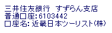

SEC2005 Regstration and Hotel Accomodation
- Advance Registration and official travel agency
- About On-line Registration
- Registration fee
- Hotel Accommodation
- Payment
- Confirmation
- Cancellation
- Refund
- General Information
Participants are requested to fill out the registration form, and return it together with the payment to Kinki Nippon Tourist Co., Ltd. (KNT), the official travel agency for the Conference. KNT will also handle travel arrangements including hotel accommodations.
Inquiries and applications in this regard should be addressed to:
SEC2005 Desk
c/o Global Business Management Branch
Kinki Nippon Tourist Co., Ltd. (KNT)
Tokyo
Fax: +
E-mail:
On-line registration is available through the main website of the Conference.
https://sec2005.org/registration.html
On or before 25th May 2005 (GMT) On site (After 26th May 2005) Regular JPY 70,000 JPY 80,000 Full time student (attach proof) JPY 55,000 JPY 80,000 1) The registration fee includes the admission of conference during 30th May - 1st June 2005, proceedings, banquet (30th May), social event(31st May), and coffee breaks.
2) Students must submit a copy of their student ID or student registration certificate issued by your organization along with the registration form.
Rooms have been reserved at hotels around the Conference venue (Makuhari Messe) by KNT.
For room reservations, please send the registration form to KNT by 15th April 2005.
Reservations should be accompanied with the payment of the room deposit as shown below.
No reservations will be confirmed in the absence of the payment. Hotel reservations are processed on a first-come-first-served basis. If your selected hotel is fully booked, we will make a reservation at your second choice hotel or similar. After the application deadline, KNT will send a confirmation slip informing you of the confirmed hotel name and the exact room charge.Hotel Map
Name of Hotel Room Type Room Size(m^2) Deposit Access Single Twin Single Twin Hotel New Ohtani Makuhari JPY 18,480 JPY 21,954 26 26 JPY 25,000 5 min. on foot from JR Kaihin Makuhari station Makuhari Prince Hotel JPY 11,025 JPY 22,050 18 33 JPY 25,000 5 min. on foot from JR Kaihin Makuhari station Hotel Green Tower Makuhari JPY 9,000 - 17 - JPY 10,000 2 min. on foot from JR Kaihin Makuhari station Toyoko Inn Chiba Makuhari JPY 5,460 - 15 - JPY 10,000 10 min. on foot from Inage Kaigan station. 1) Above rates are per room per night including 10% service charge and 5% consumption tax.
2) Breakfast is NOT included.
3) Above rates are valid only during the period of SEC2005.
4) The deposit will be deducted from your hotel bill. Please settle the balance at the hotel.
5) The above rates and the information are subject to change without notice.
Payment of the registration fee and the hotel deposit should be made in Japanese Yen only by one of the following methods.
- Credit Card (VISA, Master Card, American Express, Diners Club or JCB only.)
* Please fill in the necessary items with your signature in the credit card section of the form in "Registor Now" page.- Bank transfer to :
* Please attach a copy of the bank receipt to your form in "Registor Now" page.
Sumitomo Mitsui Banking Corp. Suzuran Branch
Account No.:
Account Name: Kinki Nippon Tourist Co., Ltd.

KNT will send you a confirmation slip after the application deadline, 15th April 2005, informing you of the completed pre-registration and hotel reservation with the name of your hotel and necessary information. Please be sure to bring the confirmation slip when you register at the Conference venue and when you check-in at your hotel.
In the event of a cancellation, a written notification should be sent directly to KNT to avoid any problems.
The cancellation charges are:Registration
No cancellation is allowed after registration.Hotel accommodation
Up to 14 days prior to check-in date: No charge
13 - 7 days prior to check-in date: 10% of daily room charge
6 - 2 days prior to check-in date: 40% of daily room charge
Less than 2 days, or no notice given: 100% of daily room charge
Refund will be made during or after the conference period, after deducting bank and/or credit card service charges and the cancellation penalties. If payment was made by credit card, the refund will be made to the same credit card. If payment was made by bank transfer, please inform us of your bank account.
[Passports and Visas]
Every person entering Japan must have a valid passport. In addition, persons coming from certain countries must have a visa issued by a Japanese consulate in their country. Please be aware that in some cases, it takes more than one month to obtain a visa. For details, please inquire at your nearest Japanese Embassy or Consulate.
Useful web site: http://www.mofa.go.jp/j_info/visit/visa/index.html[Currency Exchange]
Only Japanese yen is acceptable at stores and restaurants in Japan. You can exchange money at the airport, foreign exchange banks, and other authorized exchanges upon presentation of your passport. We encourage you to exchange your money at the airport upon arrival.[Credit Cards and Traveler's Cheques]
Visa, Master Card, American Express, Diners Club and JCB are widely accepted at hotels, department stores, shops and restaurants. Only major banks and hotels in principal cities can accept traveler's cheques, but their use in Japan is not as common as in some other countries.[Banking]
Most banks are available for foreign currency exchange transactions from 9:00 to 15:00 on weekdays.[Tipping]
There is no custom of tipping in Japan. Instead, at places such as restaurants, bars and hotels, a 10% service charge is usually added to your bill.[Insurance]
Participants are advised to procure their own travel insurance, as the Organizing Committee will assume no responsibility for personal accidents, sickness, theft or property damage.[Climate]
The conferendce will be held at a mild time of year at the end of spring. The average temperature is around 24C in the daytime and 18C at night.[Electrical Appliances]
Japan operates on 100 volts for electrical appliances. The frequency is 50 Hz in eastern Japan.[Tax]
5% consumption tax will be added to your bill.[Useful websites for travel in Japan]
Japan Travel Updates: http://www.jnto.go.jp/
At this site, you may find useful information for travel plans, accommodation and shopping in Japan. Several regional maps are also available on this site.